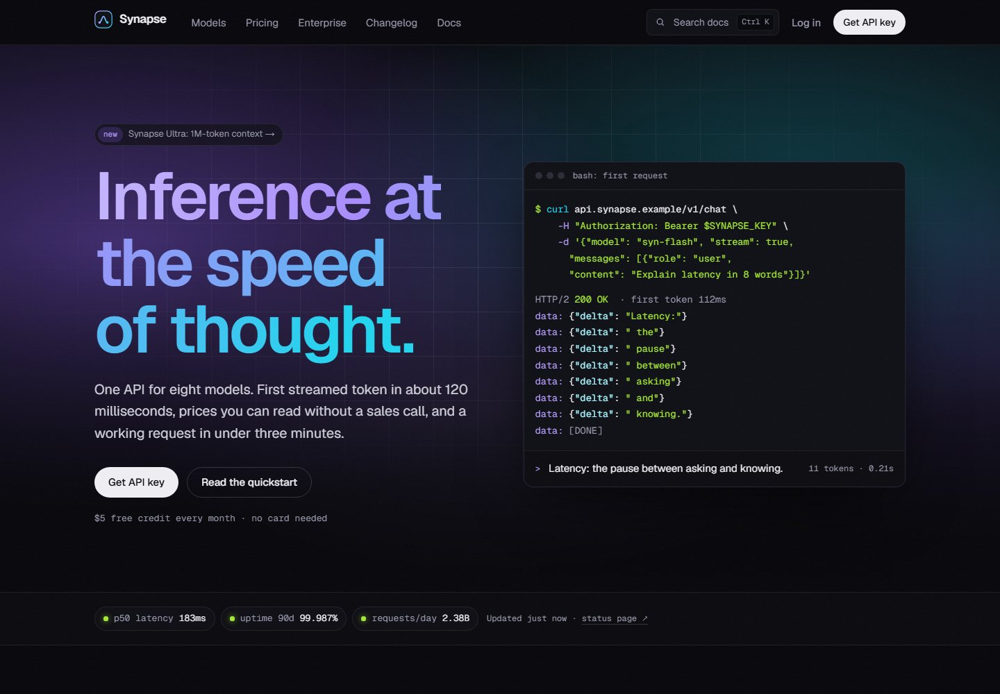

Design exploration / Dark mode / neon
Synapse
A dark, developer-first API website with interactive pricing, model discovery, and searchable docs.

The idea behind the interface.
A fictional AI inference platform with a near-black canvas and restrained violet-to-cyan accents. The interface brings working code examples, model comparisons, and understandable pricing to the foreground, instead of relying on a visual effect alone.
Inside the build
- Copyable examples in four languages use build-time syntax highlighting, with the selected language shared across pages.
- A single pricing dataset powers the model catalogue, pricing table, and URL-shareable cost calculator.
- MDX documentation is indexed for keyboard-driven search; the demo signup generates a clearly fake API key.
Scope & context
Concept project. Models, latency figures, SDK names, and API keys are simulated; no real inference service or account is created.